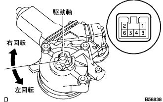
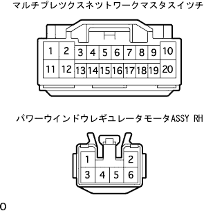

Window system cannot be operated with the regulator switch in the power window system driver's seat |
reference)| Step 1 | Fuse inspection |
Check that the FR DOOR 25A fuse is normal.
|
| ||||
| OK | |
| Step 2 | Multiplex Network Master Switch ASSY inspection |
Power supply voltage inspection
Disconnect the connector of Multi -Plecs Netsu Work Mastus Mustas Tsutsuchi ASSY.
 |
Use SST (Toyota Electrical Tester) to check the voltage between the Master Switch vehicle side connector 10 (PWR) terminal ← → body ground.
|
| ||||
| OK | |
| Step 3 | Multiplex Network Master Switch ASSY inspection |
GND inspection
Disconnect the connector of Multi -Plecs Netsu Work Mastus Mastus.
|
Use SST (Toyota Electrical Tester) to inspect the conduction between the Master Switch vehicle side connector 2 (GND) terminal ← → body earth.
|
| ||||
| OK | |
| Step 4 | Power window regulator motor ASSY RH single inspection |
Power Wind Ulegega Yureta Motor ASSY RH operation inspection
|  |
When the cross voltage is applied to each connector terminal, check that the motor operates smoothly.
| Measurement conditions | Direction of operation |
|---|---|
| Battery Plus ← → 1 terminal Battery minus ← → 2 terminals | Round right to the drive axis |
| Battery Plus ← → 2 terminals Battery minus ← → 1 terminal | Left rotation to the drive axis |
PTC (Power window motor protection function) operation inspection
Set the SST (Toyota Electrical Tester's DC400A Prove) on the two -terminal wire harness of the connector of the power window waligator Motor ASSY RH.The probe arrow is pointed at the motor.
The driver's door glass is fully closed.
After about 60 seconds, when the driver's seat power window switch is continued to be operated on the UP again (first time), check the time until the motor current changes from about 16-34A to 1A or less.(Inspection inspection)
About 60 seconds after the inspection, operate the driver's power window switch to confirm that the door glass descends.(Return inspection)
|
| ||||
| OK | |
| Step 5 | Wire harness inspection |
|  |
Cut the connector of Multi -Plecs Netto Work Mastus Mastas Tsutsuchi and Power Wind Ulegega Motor ASSY RH.
Use SST (Toyota Electrical Tester) to inspect the conversation between each terminal of the vehicle connector.
| Terminal number (Switch ← → motor) | standard |
|---|---|
| 1 (U) ← → 2 (U) | There is an conductor |
| 11 (D) ← → 1 (D) | There is an conductor |
|
| ||||
| OK | ||
| ||